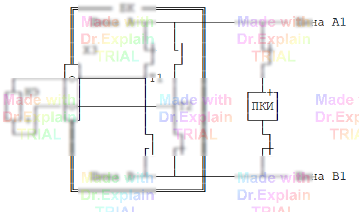

5.2.11 Команда КУ — контроль тока утечки
Команда КУ измеряет ток утечки нелинейных элементов в обратном включении. Для измерения используются ПКИ и блок напряжений (БН).
Пример:
40 КУ <10 мкА, 30 В *+12,14*
- <10 мкА — верхняя граница диапазона контроля (от 0,1 мкА до 10 мА);
- 30 В — напряжение контроля (один из рядов 5, 30, 100, 250, 500 В);
- *+12,14* — список точек: «+» перед первой задаёт общую катодную точку, к ней подаётся «плюс» ПКИ, к остальным — «минус».
Допустимая погрешность — ±15 %.
Функциональная схема измерения команды КУ

Ключевые моменты
- Знак перед общей точкой («+» / «‑») задаёт, на какую шину ПКИ подаётся плюс или минус — важно для «обратного» включения.
- Диапазон тока задаётся только верхней границей; транслятор сочтёт любое превышение за брак.